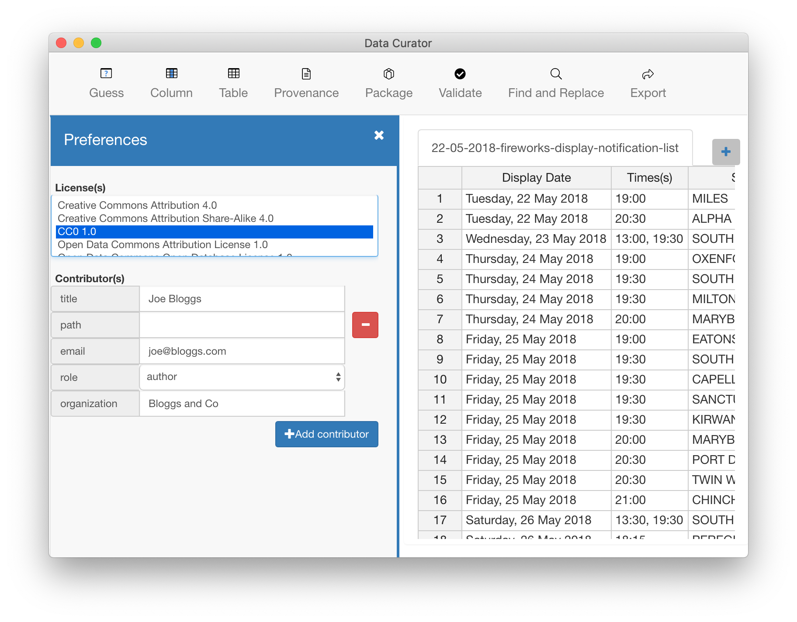

Set preferences
Use Set preferences so Data Curator remembers your favourite settings and saves you time entering various properties. You can set defalut values for the Data Package licence and contributors.
Open the Preferences panel:
- On macOS, choose Data Curator > Preferences
- On Windows, choose Settings
Set the default Licence
- Move the pointer over the Licence you wish to set as a default and click it to select it.
- Hold down Ctrl/Cmd to select more than one Licence.
- The Data Package Licence is inherited by all the tables in the package unless you explictly apply a licence to a table using Set Table Properties.
Set the default Contributors
- Move the pointer over the Add contribitor button and click it to show the data entry boxes.
- Enter values to set the defaults
- Click the Add contribitor button again to add another default contributor
- Click the Delete button to remove a default contributor
